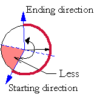

Geometry::IsLessThanAngle
| Tell whether a direction is "Less", than a direction sector (the arc determined by the two other directions), which means it points towards the direction sector of the outer bisector and the starting direction. |  |
bool IsLessThanAngle (
double alfa,
double beta,
double gamma
);
Parameters
- alfa
- The starting direction of the direction sector.
- beta
- The ending direction of the direction sector.
- gamma
- The examined direction.
Return Values
True, if the dirction is "Less", false otherwise.
Remarks
The arc runs from alpha to beta counterclocwise. The endpoints of the arc belong to the interior. (With no tolerance.)
Requirements
- Version: 1.0 or later
- Header: AngleData.h
- Import Library: GeometryImp.lib [Win]
- Module: Geometry.dll [WIN] GeometryLib [Mac]